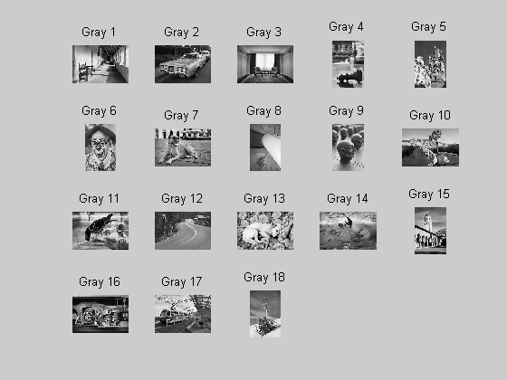
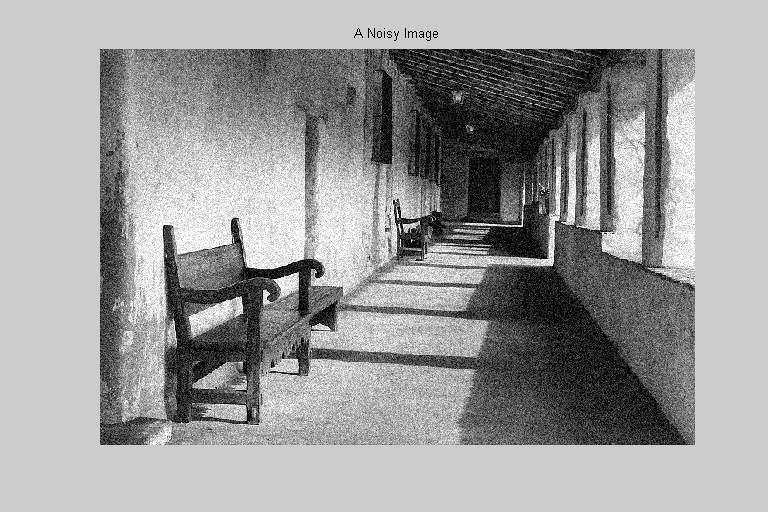
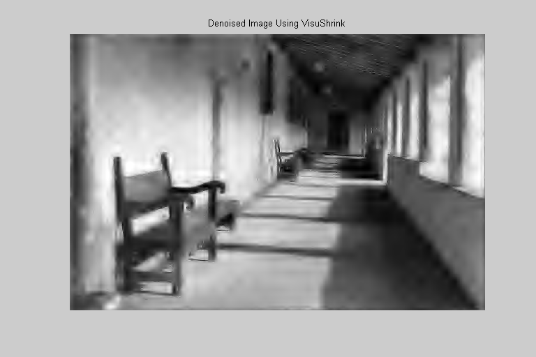

<!DOCTYPE html
  PUBLIC "-//W3C//DTD XHTML 1.0 Strict//EN">
<html xmlns:mwsh="http://www.mathworks.com/namespace/mcode/v1/syntaxhighlight.dtd">
   <head>
      <meta http-equiv="Content-Type" content="text/html; charset=utf-8">
   
      <!--
This HTML is auto-generated from an M-file.
To make changes, update the M-file and republish this document.
      -->
      <title>Image Denoising</title>
      <meta name="generator" content="MATLAB 7.5">
      <meta name="date" content="2007-12-31">
      <meta name="m-file" content="imagedenoising"><style>
      <link rel="stylesheet" type="text/css" href="style.css">
</head>
   <body>
<div class="header">
	<div class="left"><a href="matlab:edit imagedenoising">Open imagedenoising.m in the Editor</a></div>
      <div class="right"><a href="matlab:echodemo imagedenoising">Run in the Command Window</a></div>
</div>
      <div class="content">
         <h1>Image Denoising</h1>
         <introduction>
            <p>In this demo we used the denoising functions WaveletShrinkage (VisuShrink with the universal threshold) and SureShrink to
               denoise a digital image.
            </p>
         </introduction>
         <h2>Contents</h2>
         <div>
            <ul>
               <li><a href="#1">Import a Digital Image</a></li>
               <li><a href="#3">Add White Noise to the Image</a></li>
               <li><a href="#4">Denoise Using the VisuShrink Method</a></li>
               <li><a href="#5">Denoise Using the SureShrink Method</a></li>
               <li><a href="#6">Compare the PSNRs</a></li>
               <li><a href="#7">Things to Try</a></li>
            </ul>
         </div>
         <h2>Import a Digital Image<a name="1"></a></h2>
         <p>We begin by importing a digital image. We will use one of the images that comes, courtesy of Radka Tezaur, with the DiscreteWavelets
            Toolbox.  The command ShowThumbnails can be used to see what choices are available.
         </p><pre class="codeinput">ShowThumbnails(<span class="string">'ImageType'</span>,<span class="string">'GrayScale'</span>);

<span class="comment">%Let's use Gray 1.</span>
</pre> <p>The code below reads this image from disk and plots it. ImageNames gives the absolute path to all included image files.</p><pre class="codeinput">gry=ImageNames(<span class="string">'ImageType'</span>,<span class="string">'GrayScale'</span>);

<span class="comment">% Use ImageRead to read the image and store it in matrix A.</span>
A=ImageRead(gry{1});

<span class="comment">% Use ImagePlot to plot the image.</span>
clf;
ImagePlot(A);
title(<span class="string">'A Digital Image'</span>);
</pre> <h2>Add White Noise to the Image<a name="3"></a></h2>
         <p>We next add some white noise to the image.  We can use the Matlab function randn to assist in this task.</p><pre class="codeinput">[r c]=size(A);
noise=randn(r,c);

<span class="comment">% Pick a noise level.</span>
sigma = 25;

<span class="comment">% Create the noisy audio clip.</span>
noisyA=A+sigma*noise;

<span class="comment">% Plot the noisy image.</span>
figure;
ImagePlot(noisyA);
title(<span class="string">'A Noisy Image'</span>);
</pre> <h2>Denoise Using the VisuShrink Method<a name="4"></a></h2>
         <p>We will first use the VisuShrink method to denoise the image.  We compute the universal threshold and then call WaveletShrinkage
            to do the job.  We will compute four iterations of the transform and use the 12-term Coif(2) filter for the demonstration.
         </p><pre class="codeinput"><span class="comment">% Compute the universal threshold.</span>
its=4;
lambdauniv=UniversalThreshold(noisyA,Coif(2),its);

<span class="comment">% Perform VisuShrink</span>
Visu=WaveletShrinkage(noisyA,Coif(2),its,lambdauniv);

<span class="comment">% Plot the denoised image</span>
figure;
ImagePlot(Visu);
title(<span class="string">'Denoised Image Using VisuShrink'</span>);
</pre><pre class="codeoutput">Optimization terminated: magnitude of search direction less than TolX.
Optimization terminated: magnitude of search direction less than TolX.
</pre> <h2>Denoise Using the SureShrink Method<a name="5"></a></h2>
         <p>We next use the SureShrink method to denoise the image.</p><pre class="codeinput">Sure=SureShrink(noisyA,Coif(2),its);

<span class="comment">% Plot the denoised image</span>
figure;
ImagePlot(Sure);
title(<span class="string">'Denoised Image Using SureShrink'</span>);
</pre><pre class="codeoutput">Optimization terminated: magnitude of search direction less than TolX.
</pre> <h2>Compare the PSNRs<a name="6"></a></h2>
         <p>As a way to test the effectiveness of each method, we compute the PSNR of each denoised matrix against the original.</p><pre class="codeinput"><span class="comment">% The PSNR of A vs. Visu</span>
PSNR1=PSNR(A,Visu);
disp(sprintf(<span class="string">'The PSNR of A vs. the VisuShrink method is %f.'</span>,PSNR1));

<span class="comment">% The PSNR of A vs. Sure</span>
PSNR2=PSNR(A,Sure);
disp(sprintf(<span class="string">'The PSNR of A vs. the SureShrink method is %f.'</span>,PSNR2));
</pre><pre class="codeoutput">The PSNR of A vs. the VisuShrink method is 22.461374.
The PSNR of A vs. the SureShrink method is 26.819032.
</pre><h2>Things to Try<a name="7"></a></h2>
         <p>Make a copy of this demo and :</p>
         <div>
            <ul>
               <li>try different wavelet filters</li>
               <li>change the value of iterations to any integer 1, 2,..., 8</li>
               <li>try different images</li>
               <li>try other values for lambda</li>
               <li>for WaveletShrinkage, you can enter a list of lambdas - one for each   highpass portion of the transform.</li>
            </ul>
         </div><pre class="codeinput">close <span class="string">all</span>;
</pre><p class="footer"><br>
            Published with MATLAB&reg; 7.5<br></p>
      </div>
      <!--
##### SOURCE BEGIN #####
%% Image Denoising
% In this demo we used the denoising functions WaveletShrinkage (VisuShrink
% with the universal threshold) and SureShrink to denoise a digital image.

%% Import a Digital Image
% We begin by importing a digital image. We will use one of the images that
% comes, courtesy of Radka Tezaur, with the DiscreteWavelets Toolbox.  The 
% command ShowThumbnails can be used to see what choices are available.
ShowThumbnails('ImageType','GrayScale');

%Let's use Gray 1.

%% 
% The code below reads this image from disk and plots it.
% ImageNames gives the absolute path to all included image files.
gry=ImageNames('ImageType','GrayScale');

% Use ImageRead to read the image and store it in matrix A.
A=ImageRead(gry{1});

% Use ImagePlot to plot the image.
clf;
ImagePlot(A);
title('A Digital Image');

%% Add White Noise to the Image
% We next add some white noise to the image.  We can use the Matlab function
% randn to assist in this task.

[r c]=size(A);
noise=randn(r,c);

% Pick a noise level.
sigma = 25;

% Create the noisy audio clip.
noisyA=A+sigma*noise;

% Plot the noisy image.
figure;
ImagePlot(noisyA);
title('A Noisy Image');

%% Denoise Using the VisuShrink Method
% We will first use the VisuShrink method to denoise the image.  We compute
% the universal threshold and then call WaveletShrinkage to do the job.  We
% will compute four iterations of the transform and use the 12-term Coif(2)
% filter for the demonstration.

% Compute the universal threshold.
its=4;
lambdauniv=UniversalThreshold(noisyA,Coif(2),its);

% Perform VisuShrink
Visu=WaveletShrinkage(noisyA,Coif(2),its,lambdauniv);

% Plot the denoised image
figure;
ImagePlot(Visu);
title('Denoised Image Using VisuShrink');

%% Denoise Using the SureShrink Method
% We next use the SureShrink method to denoise the image.

Sure=SureShrink(noisyA,Coif(2),its);

% Plot the denoised image
figure;
ImagePlot(Sure);
title('Denoised Image Using SureShrink');

%% Compare the PSNRs
% As a way to test the effectiveness of each method, we compute the PSNR of
% each denoised matrix against the original.

% The PSNR of A vs. Visu
PSNR1=PSNR(A,Visu);
disp(sprintf('The PSNR of A vs. the VisuShrink method is %f.',PSNR1));

% The PSNR of A vs. Sure
PSNR2=PSNR(A,Sure);
disp(sprintf('The PSNR of A vs. the SureShrink method is %f.',PSNR2));

%% Things to Try
% Make a copy of this demo and :
%
% * try different wavelet filters
% * change the value of iterations to any integer 1, 2,..., 8
% * try different images
% * try other values for lambda 
% * for WaveletShrinkage, you can enter a list of lambdas - one for each
%   highpass portion of the transform.  
% 

%%
close all;
displayEndOfDemoMessage(mfilename)
##### SOURCE END #####
-->
   </body>
</html>